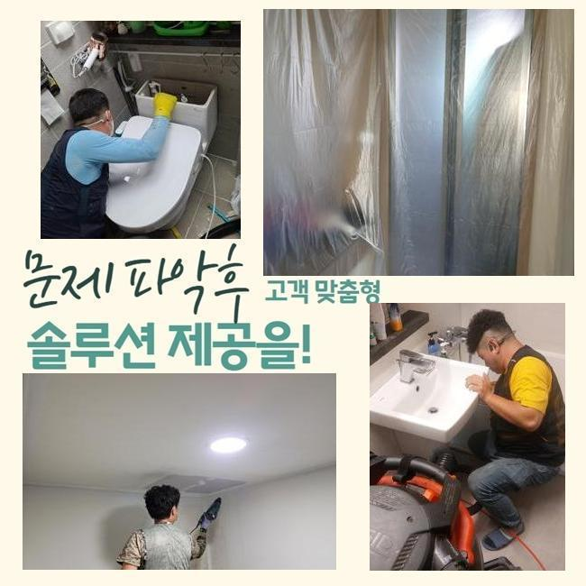
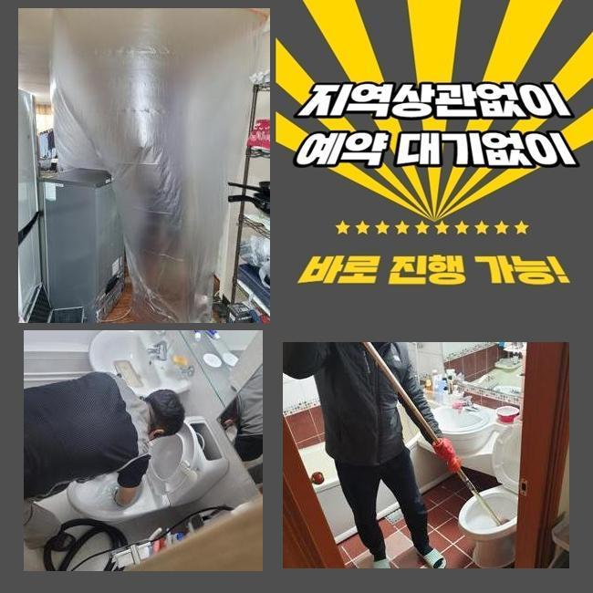
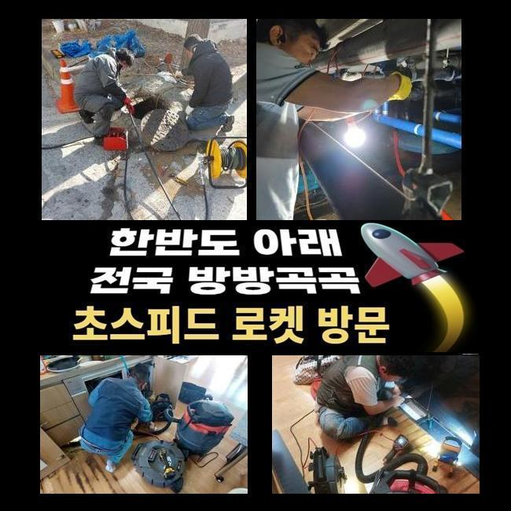
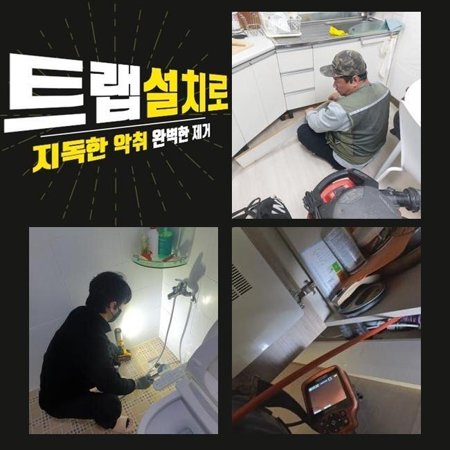
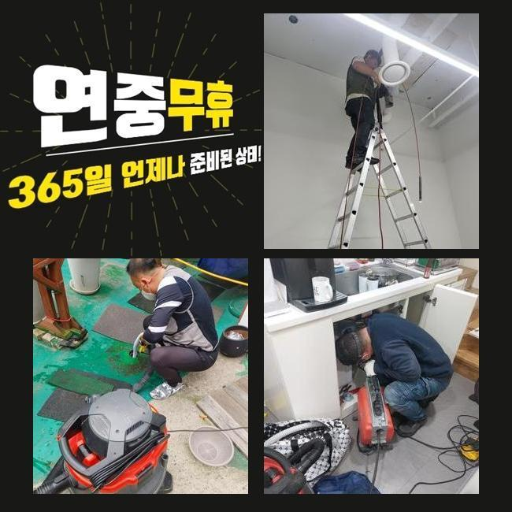
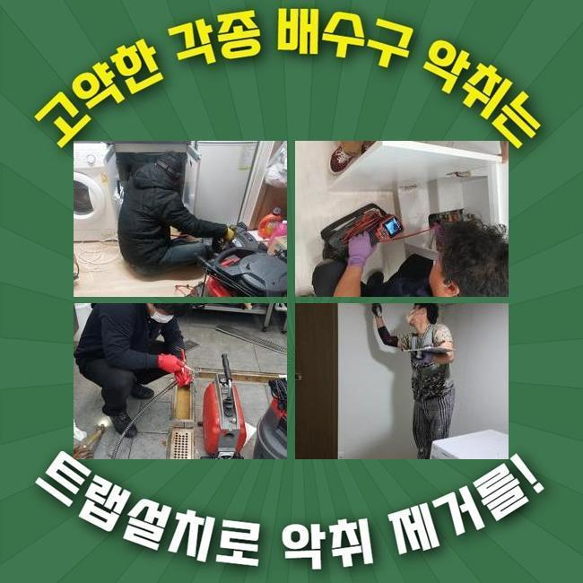
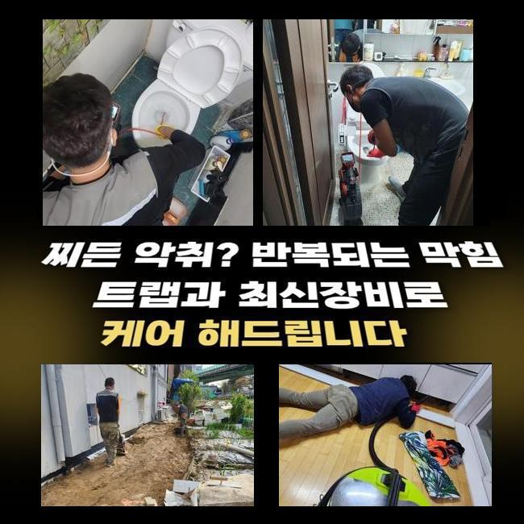

🏠 성북구 정릉동세탁기배수구막힘 안암동 악취차단 누수
용인 싱크대막힘 전문 시공 후기

📋 작업 개요
- 위치: 용인
- 서비스 유형: 싱크대막힘, 하수구막힘, 배관막힘, 누수수리, 배관청소, 고압세척, 악취차단
- 작업 일시: 2025. 2. 26. 22:20
- 업체명: 하수구수사대 (010-5615-2118)
🔍 문제 상황
성북구 정릉동세탁기배수구막힘 안암동 악취차단 누수
저희팀은 배수관과 관계된 여러가지의 시공을 진행하고 있답니다
배관전문가가 상시적으로 업무대기하고 있고 고객께서 처해있으신 고장에 바로바로 응대해드린답니다
이번 글에서는 식당에서 발생한 물막힘 처치 과정을 소개해드리려 합니다
그저께 의뢰를 해주셨던 위치는 음식점이 모여있는 건물이었는데요
한 음식점의 배수문이 막혀버리게 되었으며 설상가상으로 화장실쪽의 통수도 제대로 안돼 문제가 되는 상황이었습니다
해당위치에서 일을 마친 근무자가 즉시 내방드렸고 합당한 대책을 수행하기로 하였답니다
주방배수구 정체와 내부화장실의 막힘발생 지점은 보양식 전문식당이었습니다
주방공간에선 음식찌꺼기의 유입량이 많아 관막힘이 자주 발생해요
그러므로 식당운영을 하고계신 경우엔 그것에 대처한 여러가지의 방법들을 모색하시곤 하는데요
평상시 조심스럽게 쓰셨더라도 급작스레 큼직한 음식찌꺼기가 들어간다면 체증이 일어나기 쉬우므로 관리하기 어려운 측면도 있습니다
금번 소개드릴곳은 어떤 원인으로 고장이 생긴건지 밀도있게 체크해보기로 했어요
일단 주방설비부터 점검하기로 했죠
음식점은 보통가정의 주방시설물과 상이하게 배수트렌치의 사이즈도 상당히 크죠

🔎 원인 분석
💡 전문가 진단: 정밀 진단 장비를 사용하여 슬러지의 고착 여부를 판명하고 타격/세척 작업을 실시했습니다.
그러므로 감당가능한 하수량 역시 증가하게 되죠
그렇기 때문에 보통의 가정집의 배수성능 기준으로 이상여부를 결단하여선 곤란하며 이에 합당한 하수를 흘려보내 분명하게 정황을 체크해야해요
이런 공정을 올바르게 안하고 대충 넘어간다면 몇달후에 사태가 또다시 일어날수가 있어요
배수기능을 확인하였고 정상적으로 물빠짐이 이어지지 않는단 정황을 확인하였어요
천천히 소멸되기는 하였으나 정상적 운영을 시행하기엔 역부족이었답니다
그다음 배관안으로 배관내시경을 투입시켜 선명하게 상태를 진단하기로 했어요
기름성분들과 석회물질들이 가득한 국면이었어요
관로 속에 들어가면 곤란한 물질들이 적체되어 정체가 생긴거랍니다
이러한 것들과 관계된 관로에 흘러들어가는것을 주의해야할 것들을 설명하는 시간을 가져보도록 할게요
해당 사안을 숙지해주기실 바라며 일상생활에 이를 적용해볼것을 추천합니다
유분은 수돗물과 만나면 고착화되고 그로인해 하수관에 달라붙을 확률이 큰데요
그렇기 때문에 반드시 종이류로 처리하고 세정하는게 중요하답니다
거기에 더하여 기름수거통도 능동적으로 쓰시는게 합당합니다
요즘에 즐겨드시는 커피의 잔여물도 관로막힘을 야기할수 있죠
원두가루는 기름기를 빨아들이는 기질이 존재하여 하수관 속에서 뒤얽힐수가 있죠

🔧 작업 과정
그렇기에 일반쓰레기로 분류하여 버리시길 바라요
조리하다가 그릇에 잔류하는 음식물을 싱크대에 투입하면 관로에 누적될 가망성이 크죠
양념장과 같은것들은 알갱이가 미세하기에 거름망을 지나쳐 관로로 이동하기 쉬우므로 따로 처리하는게 마땅합니다
튀김류를 만드시다가 누적된 전분가루와 같은 성분도 싱크대에 그냥 투입해 버리면 엉겨붙어서 물막힘이 유발될수 있죠
그러므로 이러한 것들은 꼭 별도처리하여 배수설비를 깔끔하게 관리해나가실 것을 권장합니다
내시경기기를 활용하여 깊은층까지 검사해보았더니 공동관도 트러블이 일어났을거라 예측되었고 추가로 검사해보기로 했죠
우선적으로 문의하신 분의 음식점의 배수관 정비를 시행해야 하겠습니다
닭백숙요리 전문식당이라 타업장과 비교하여 기름슬러지가 상당량 누적되어 있었고 그외 음식쓰레기들까지 합쳐져 길목이 차단된 형국이었습니다
그것들이 오랫동안 잔류하면서 배관과 하나가 돼버린 형국이었죠
분쇄기기를 가동시켜 이번에 방문한 곳의 초기 세척작업을 시행하기로 했습니다
부품들은 배관의 특성에 맞게끔 교체하여 시공할때도 있는데 보통은 사슬형태의 체인노커를 쓰곤하죠
나일론으로 피복된 금속케이블 끝단에 카바이드 체인이 체결되어 관로속에 집어넣고 작동시키면 빠르게 돌면서 누적된 잔재들을 파쇄시키는 공정을 이행하게 만들어주죠
보편적으로 샤프트를 이용하면 이물들이 수월하게 탈락합니다
하지만 이전 점검을 토대로 이건물은 중앙관로가 이물이 전이되었다는걸 알아낸바가 있죠
그땐 개별배수관 처리만으로 본질적인 막힘이 처리되지 않죠
정비된걸로 보일수는 있겠으나 공용하수도가 정체를 이루고 있다면 몇주정도가 흐른다음에 재차 배수관이 막히게 된답니다
개별배관 청소를 끝마친뒤 지하실쪽에 자리잡은 공용관을 점검하기로 결정했어요
배관카메라를 넣어보니 두껍게 누적된 흑회색의 침전물들이 가득차 있었어요
오랜시간 누증된것으로 간주할수 있었고 배관부피도 컸기 때문에 폐기물도 많아졌던겁니다
그걸 고압물세정으로 정비해나가기로 하였고 2시간이 넘게 소제를 시행했죠
횡주관까지 스케일링 공정을 하고나서 고객님의 삼계탕집으로 가서 배수관 통수시험과 화장실안의 배수관까지 검사를 시행하였더니 정말 깔끔하게 통수가 되어서 시원하게 빠져나갔답니다
금번 지점은 상당량의 기름성분과 음식쓰레기가 막힘을 일으켰던 이유였고 지하주차장의 횡주관로까지 막혀있었기에 더더욱 사태가 심각했었죠
그 부분을 분쇄장비와 고압물세척으로 알맞게 정리하였으며 해결된 결과물을 목도할수 있었죠
수선을 마감하고 나중에 발생가능한 문제들과 의뢰인께서 간과할수 있는 배수관관리 방안을 정리해서 안내하였습니다


✅ 작업 완료
그리고 전화로 한번더 물어보셨기에 꼼꼼하게 다시금 설명드렸죠
작업을 잘못 진행하면 몇달뒤 배수관에 상당한 문제점이 일어날수가 있죠
그렇기에 정확한 시공방식을 적용해서 정비하려는 기본방침이 중요해요
따라서 여러 변수를 염두에 두고 시공을 속행해야 된다는걸 말씀드립니다
식당 등에서 급작스레 하수관막힘이 생긴다면 영업상 크고작은 손실을 입을텐데요
그렇기 때문에 이글을 읽으시는 분들은 미미하게라도 트러블이 목도되었다면 망설이지말고 전문가에게 문의하시길 당부드려요




⚠️ 베란다 누수 및 방수 관리 방법
- ✅ 비가 많이 올 때 창틀 주변이나 아래층 천장에 얼룩이 생기는지 정기적으로 확인해 보세요.
- ✅ 우수관 주변 실리콘 마감이 들뜨거나 깨진 틈새가 있는지 손상 여부를 수시로 체크하세요.
- ✅ 베란다 바닥 타일의 줄눈(메지)이 소실되면 그 틈으로 물이 침투하여 누수가 유발됩니다.
- ✅ 누수 의심 증상 발견 시 방치하면 아래층 손실이 커지므로 즉시 전문가의 진단을 받으십시오.
💡 핵심 정리
- 확실한 장비 작업(내시경 점검 및 샤프트 스케일링)으로 원인을 뿌리 뽑습니다.
- 작업 후 1년 이내에 동일한 부위 재발 시 100% 무상 A/S 서비스를 보장합니다.
- 서울 · 경기 · 인천 전 지역에 24시간 언제든 긴급 출동할 수 있도록 항시 대기 중입니다.
❓ 자주 묻는 질문 (FAQ)
🚨 용인 싱크대막힘 문제로 고민이신가요?
정확한 원인 진단과 확실한 시공으로 재발 없는 해결을 약속드립니다.
24시간 긴급 출동 | 서울 · 경기 · 인천 전지역 | 1년 내 재발 시 무상 A/S